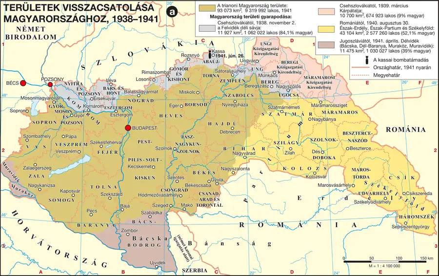

Az első bécsi döntéstől Kárpátaljáig
Az első bécsi döntés (1938. nov. 2.) nyomán Magyarország visszakapta a Felvidék déli, magyar többségű sávját (11 927 km², 1 millió 50 ezer fő, 84% magyar) — nem volt átfogó program a visszatérő területek beillesztésére, a bevonuló hadsereg és adminisztráció lekezelően bánt az itt élőkkel. 1939. március 15-én, a Wehrmacht prágai bevonulásával egy időben a magyar egységek megkezdték Kárpátalja megszállását (12 061 km², 600 ezer fő, csak 7% magyar) — Teleki eredetileg autonómiát tervezett a területnek, de ezt végül elutasították. Ezt követően Magyarország kilépett a Népszövetségből (1939. ápr. 11.).
A második bécsi döntés és Délvidék
1940. augusztus 30-án került sor a második bécsi döntésre, amellyel Magyarország visszakapta Észak-Erdélyt Nagyváraddal és Kolozsvárral, valamint a Székelyföldet (43 104 km², 2 millió 400 ezer fő, 51% magyar) — Dél-Erdélyben mintegy 400 ezer magyar maradt, szellemi vezetőjük Márton Áron püspök volt. 1941. április 11-én, immár nem békés úton, a magyar honvédség bevonult Délvidékre (Bácska, a Baranyai háromszög, Muraköz, Muravidék — 11 475 km², 1 millió 25 ezer fő, 37% magyar) — a Bácskából kiutasítottak 150 ezer szerbet, betelepítettek 13,5 ezer bukovinai székelyt, jelentős szerb ellenállás (csetnik mozgalom) bontakozott ki, amelynek felszámolására szervezett razziák az „újvidéki mészárlás”ba torkolltak (kb. 5000 halott, szerbek és zsidók) 1942-ben.
Fontos megkülönböztetés: a négy revíziós lépés nem egyformán zajlott le — az első három (Felvidék, Kárpátalja, Észak-Erdély) nemzetközi döntés vagy megszállás formájában, viszonylagosan békés körülmények között történt, míg a negyedik (Délvidék) egy szomszédos ország katonai lerohanásához kapcsolódott, és súlyos etnikai erőszakhoz (újvidéki mészárlás) vezetett.
| Fogalmak | Személyek | Kronológia | Topográfia |
|---|---|---|---|
| — | — | 1938 az első bécsi döntés; 1939 Kárpátalja visszacsatolása; 1940 a második bécsi döntés; 1941. április Jugoszlávia megtámadása; 1942 újvidéki mészárlás E | Újvidék E |
Területek visszacsatolása Magyarországhoz, 1938–1941
A visszacsatolások időrendje, módszere és területi következményei hasonlíthatók össze.

1. forrás — A revízió eredményeinek összegzése (tartalmi kivonat)
A leírás szerint Magyarország 1941-ben érte el Trianon utáni legnagyobb kiterjedését: a Trianonban elvesztett országterület 42%-át, a magyar anyanyelvű lakosság 80%-át sikerült visszaszerezni. A megnagyobbodott ország — a környező államok megszállásának, szétbomlásának is köszönhetően — jelentősen előrelépett a térség rangsorában, Románia után a második legnagyobb állam lett, ugyanakkor a nemzetiségek aránya ismét 25%-ra nőtt a csaknem homogén trianoni Magyarországhoz képest.
a) Mekkora arányban sikerült visszaszerezni az elvesztett területet és lakosságot?
b) Hogyan változott Magyarország helyzete a térség országai között?
c) Milyen társadalmi-etnikai következménnyel járt a megnagyobbodás?
Ellenőrző feladatok
Párosítsd a revíziós lépést az évszámmal!
Állítás: Délvidék visszacsatolása békés úton, nemzetközi döntés eredményeként történt.
Ki volt Dél-Erdélyben maradt magyarok szellemi vezetője?